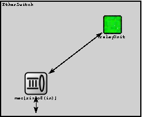
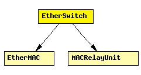

File: NetworkInterfaces/EtherSwitch/EtherSwitch.ned
Model of an Ethernet switch.
The duplexChannel attributes of the MACs must be set according to the medium connected to the port; if collisions are possible (it's a bus or hub) it must be set to false, otherwise it can be set to true.
This model does not contain the spanning tree algorithm.
The following diagram shows usage relationships between modules, networks and channels. Unresolved module (and channel) types are missing from the diagram. Click here to see the full picture.
If a module type shows up more than once, that means it has been defined in more than one NED file.
| EtherMAC | Ethernet MAC layer. MAC performs transmission and reception of frames. Doesn't do encapsulation/decapsulation; see EtherLLC and EtherEncap for that. |
| MACRelayUnit | Prototype for modules providing Ethernet switch functionality. These modules handle the mapping between ports and MAC addresses, and forward frames (EtherFrame) to appropriate ports. |
| Name | Type | Description |
|---|---|---|
| relayUnitType | string | type of the MACRelayUnit; currently possible values are MACRelayUnitNP and MACRelayUnitPP |
| Name | Direction | Description |
|---|---|---|
| in [ ] | input | |
| out [ ] | output |
| Name | Type | Description |
|---|---|---|
| relayUnit.addressTableFile | string | set to empty string if not used |
| relayUnit.addressTableSize | numeric | max size of address table |
| relayUnit.agingTime | numeric | max idle time for address table entries (if expires, entry is removed from the table) |
| mac[*].address | string | MAC address as hex string (12 hex digits), or "auto". "auto" values will be replaced by a generated MAC address in init stage 0. |
| mac[*].txrate | numeric | maximum data rate supported by this station (bit/s); actually chosen speed may be lower due to auto- configuration. 0 means fully auto-configured. |
| mac[*].duplexEnabled | bool | whether duplex mode can be enabled or not; whether MAC will actually use duplex mode depends on the result of the auto-configuration process (duplex is only possible with DTE-to-DTE connection). |
| mac[*].writeScalars | bool | enable/disable recording statistics in omnetpp.sca |
module EtherSwitch parameters: relayUnitType: string; // type of the MACRelayUnit; currently possible // values are MACRelayUnitNP and MACRelayUnitPP gates: in: in[]; out: out[]; submodules: relayUnit: relayUnitType like MACRelayUnit; gatesizes: lowerLayerIn[sizeof(in)], lowerLayerOut[sizeof(in)]; display: "i=greenbox;p=200,50"; mac: EtherMAC[sizeof(in)]; parameters: promiscuous = true, txQueueLimit = 1000, // increase if needed queueModule = ""; display: "i=block/queue;p=70,150,row;q=queue"; connections: for i=0..sizeof(in)-1 do mac[i].upperLayerIn <-- relayUnit.lowerLayerOut[i]; mac[i].upperLayerOut --> relayUnit.lowerLayerIn[i]; mac[i].physIn <-- in[i]; mac[i].physOut --> out[i]; endfor; endmodule